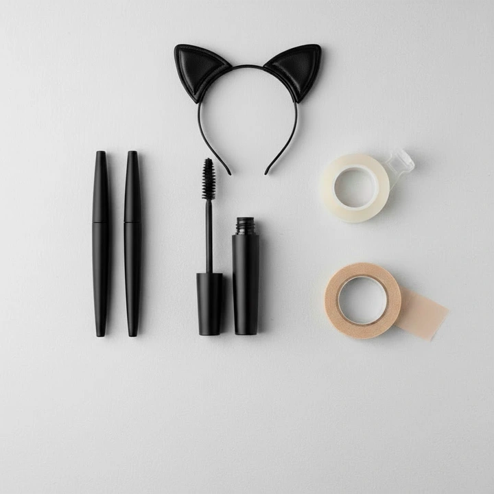
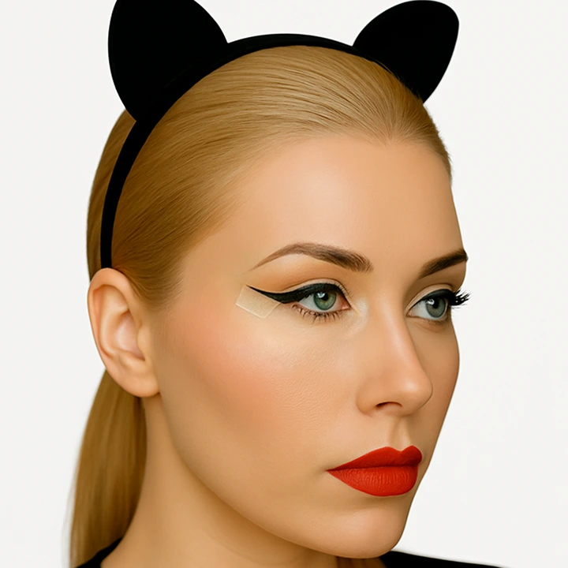
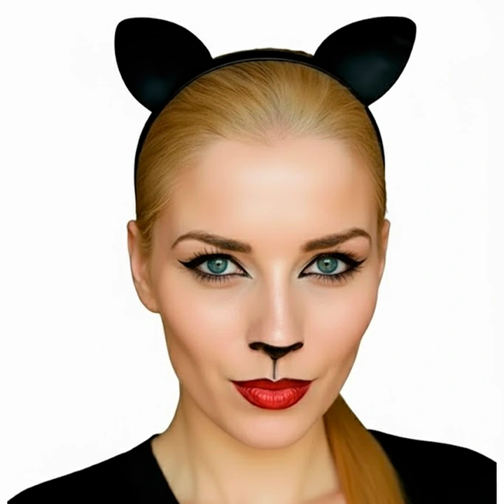

Все для грима
-

Черная водостойкая подводка
Черная тушь для ресниц
Канцелярский скотч или медицинский пластырь
Совет. По желанию добавьте блесток в области скул и на губах.
Начнем...
-
Шаг 1

Кошачий взгляд
Приклейте кусочек скотча от внешнего уголка глаза под нужным углом. Подводкой проведите линию вдоль края — стрелка получится ровной и симметричной, имитируя кошачий взгляд.
-
Шаг 2

Носик
Черной подводкой закрасьте кончик носа острым треугольником вниз. Проведите тонкую линию от центра носа к верхней губе.
-
Шаг 3
Усики
Отметьте точки с каждой стороны над губой. Тонкой кистью проведите 3-4 изящные линии наружу, слегка вверх и с изгибом.

Режиссёр
Как сделать сцену мурлыкающей
Кисы более эффектной?